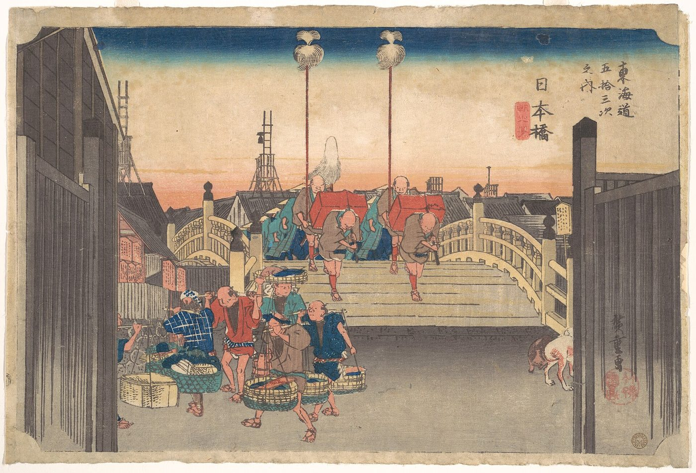

スパイラルダイナミクス › 10 / 10
応用と批判
家族や職場で、話がかみ合わない。スパイラルダイナミクスを、価値観の段階で関係・教育・経営・政治を読む地図として整理し、ベックらが語った利用例と南アフリカ・ガーナでの事例、フェルメーレン、ライス、ライターによる学術的根拠や格付け化への批判、『ティール組織』との違いをたどります。

自分と家族で話がかみ合わない。職場や社会の対立を、別の角度から見直したい。スパイラルダイナミクスは、価値観の変化を「段階」として捉え、人だけでなく組織や制度、国どうしの関係にも当てはめられるとされる地図です。
連載の最後となるこの記事では、この地図が何に使えると語られてきたのかを整理します。同時に、実際の利用例と批判も置きます。広く使えるように見える地図ほど、見える範囲と見えにくい範囲を一緒に確かめる必要があるためです。
スパイラルダイナミクスは何に使えるのか
この理論の出発点は、人が何を大切にし、どのような動機で動くかを読むことにあります。その見方を人の集まりへ広げることで、関係、教育、経営、政治などを考えるための枠組みにできる、とされています。
自分を知る
もっとも基本の使い方は、自分がいまどの段階に重心を置き、次にどのような課題があるのかを見ることです。ただし、エゴは自分を実際より二段上に置きたがる、とされるため、自己判断には難しさもあります。住む町、職場、周囲の人が自分をどちらへ引いているかを見直し、次の段階の人が多い場所へ身を移すことが、変化を早める考え方として置かれています。
もっとも基本の使い方は、自分がいまどの段階に重心を置き、次にどのような課題があるのかを見ることです。ただし、エゴは自分を実際より二段上に置きたがる、とされるため、自己判断には難しさもあります。住む町、職場、周囲の人が自分をどちらへ引いているかを見直し、次の段階の人が多い場所へ身を移すことが、変化を早める考え方として置かれています。
人との関係、恋愛、家族
関係の中では、相手がどの段階から話しているかを考えることで、話がずれる理由を読み解けるとされます。結婚を考える相手との違い、友人が引き止める理由、家族との行き違いも、その対象になります。目的は相手を下に置くことではなく、橋を架けるためです。たとえば親が信心深く、自分はそうでない場合には、学んでいる内容を親の宗教の言葉の中で通じる形にして伝える、という見方になります。差は裁きではなく、伝わる言葉を探す課題として扱われます。
関係の中では、相手がどの段階から話しているかを考えることで、話がずれる理由を読み解けるとされます。結婚を考える相手との違い、友人が引き止める理由、家族との行き違いも、その対象になります。目的は相手を下に置くことではなく、橋を架けるためです。たとえば親が信心深く、自分はそうでない場合には、学んでいる内容を親の宗教の言葉の中で通じる形にして伝える、という見方になります。差は裁きではなく、伝わる言葉を探す課題として扱われます。
子育てと教育
子育てでは、子どもがいまいる段階に合わせ、次へ進むための本、場、人を用意するという応用があります。ここで重視されるのは、子どもがまだいない段階のものを、一度に与えないことです。橙の子どもに黄や青緑の知識を浴びせても、届かないとされます。
教育は、この理論が大きな可能性を持つと見ている分野です。青では経典の暗記と服従、橙では資格、職業技能、標準テスト、緑では健康、環境、関係についての学びが重視されると説明されます。第二層の教育は、生徒が段階ごとに違う道を必要とすることを認め、入学時の見立てに応じて次の段階へ進む課程を考える構想です。教師が使う場合も、格付けではなく、その子に何が必要かを考えるための地図とされます。
子育てでは、子どもがいまいる段階に合わせ、次へ進むための本、場、人を用意するという応用があります。ここで重視されるのは、子どもがまだいない段階のものを、一度に与えないことです。橙の子どもに黄や青緑の知識を浴びせても、届かないとされます。
教育は、この理論が大きな可能性を持つと見ている分野です。青では経典の暗記と服従、橙では資格、職業技能、標準テスト、緑では健康、環境、関係についての学びが重視されると説明されます。第二層の教育は、生徒が段階ごとに違う道を必要とすることを認め、入学時の見立てに応じて次の段階へ進む課程を考える構想です。教師が使う場合も、格付けではなく、その子に何が必要かを考えるための地図とされます。
医療と健康
医療の仕組みも、利益を軸にした橙の医療、心と体と環境をつなげて見ようとする緑や黄の医療という形で読めるとされています。この理論を語る人のなかには、標準の医療から外れた療法を勧める場合もありますが、それは理論の内容というより語る人の好みによるものです。体の症状は、まず医療機関で。その前提を外さない範囲で、医療制度を段階の違いから眺める見方があります。
医療の仕組みも、利益を軸にした橙の医療、心と体と環境をつなげて見ようとする緑や黄の医療という形で読めるとされています。この理論を語る人のなかには、標準の医療から外れた療法を勧める場合もありますが、それは理論の内容というより語る人の好みによるものです。体の症状は、まず医療機関で。その前提を外さない範囲で、医療制度を段階の違いから眺める見方があります。
仕事、経営、マーケティング
1996年の本が主に向けていたのは、経営の分野でした。会社にも段階があり、赤の事業（犯罪組織）、橙の事業（利益最大化）、緑の事業（従業員と環境への配慮）などとして理解できるとされます。応用の中心は、自分の段階、会社の段階、従業員の段階、顧客の段階をそろえることです。顧客が青、会社が橙、自分が緑なら混乱が起きるという説明になります。緑の商品を橙の顧客へ橙の言葉で届けることや、次の10年の社会の動きを見立てて商品を考えることも、ここに含まれます。
1996年の本が主に向けていたのは、経営の分野でした。会社にも段階があり、赤の事業（犯罪組織）、橙の事業（利益最大化）、緑の事業（従業員と環境への配慮）などとして理解できるとされます。応用の中心は、自分の段階、会社の段階、従業員の段階、顧客の段階をそろえることです。顧客が青、会社が橙、自分が緑なら混乱が起きるという説明になります。緑の商品を橙の顧客へ橙の言葉で届けることや、次の10年の社会の動きを見立てて商品を考えることも、ここに含まれます。
政治と「文化戦争」
政治では、有権者が自分の段階に近い候補へ票を入れるとされます。対立の一部は、異なる段階どうしが互いを裁く構図として読まれ、それを「文化戦争」として見ることで、政策の中身から目が離れる場合もあるという考え方です。
一方で、この領域は地図が格付けの道具になりやすい場所でもあります。ある党を下の段階と呼ぶ行為そのものが、第一層の特徴を示すことになりうるためです。
政治では、有権者が自分の段階に近い候補へ票を入れるとされます。対立の一部は、異なる段階どうしが互いを裁く構図として読まれ、それを「文化戦争」として見ることで、政策の中身から目が離れる場合もあるという考え方です。
一方で、この領域は地図が格付けの道具になりやすい場所でもあります。ある党を下の段階と呼ぶ行為そのものが、第一層の特徴を示すことになりうるためです。
国と国、途上国への支援
国際的な問題では、独裁者を倒せば民主主義が根づくという見通しの失敗が、しばしば例として引かれます。紫や赤に重心のある社会へ橙や緑の制度を持ち込んでも、その社会は制度を次の段階である青、つまり宗教による統治の形に作り変える、と考えられています。支援は、その社会がいる段階の一つ先に合わせる必要がある、という見方です。
同じ理由から、宗教は、それ自体がどこかの段階にあるのではなく、あらゆる段階に存在するとされます。同じ宗教にも赤、青、橙、緑の形があり、宗教をなくそうとすることは、大切なものを奪われた側の反発を招くという説明です。理論の作り手の一人であるベックは、中東で紛争の当事者に働きかける活動を続けました。
国際的な問題では、独裁者を倒せば民主主義が根づくという見通しの失敗が、しばしば例として引かれます。紫や赤に重心のある社会へ橙や緑の制度を持ち込んでも、その社会は制度を次の段階である青、つまり宗教による統治の形に作り変える、と考えられています。支援は、その社会がいる段階の一つ先に合わせる必要がある、という見方です。
同じ理由から、宗教は、それ自体がどこかの段階にあるのではなく、あらゆる段階に存在するとされます。同じ宗教にも赤、青、橙、緑の形があり、宗教をなくそうとすることは、大切なものを奪われた側の反発を招くという説明です。理論の作り手の一人であるベックは、中東で紛争の当事者に働きかける活動を続けました。
コーチング、心理療法、人生の目的
コーチングや心理療法では、相談者が次へ進めない理由や恐れを、段階の違いから考える応用があります。緑へ急いで移ったために橙の課題である生計を立てることが積み残しになっている場合、あるいは赤に退行している相談者に緑の技法が届かず、療法士が燃え尽きる場合などが挙げられます。要点は、相手の段階の言葉で話すことです。
本、動画、講義、論説について、それはどの段階から語られているかを問うこともできます。芸術や科学にも段階ごとの形があり、次の段階の芸術や科学がどのようなものになるかは、まだ誰も知りません。人生の目的についても、それがどの段階の価値に仕えているか、一段上げると何が変わるかを問う使い方が示されています。
コーチングや心理療法では、相談者が次へ進めない理由や恐れを、段階の違いから考える応用があります。緑へ急いで移ったために橙の課題である生計を立てることが積み残しになっている場合、あるいは赤に退行している相談者に緑の技法が届かず、療法士が燃え尽きる場合などが挙げられます。要点は、相手の段階の言葉で話すことです。
本、動画、講義、論説について、それはどの段階から語られているかを問うこともできます。芸術や科学にも段階ごとの形があり、次の段階の芸術や科学がどのようなものになるかは、まだ誰も知りません。人生の目的についても、それがどの段階の価値に仕えているか、一段上げると何が変わるかを問う使い方が示されています。
歴史と未来を読む三つの問い
歴史上の争いを段階の衝突として読み直し、教育、医療、政治、科学、他の国々がこの先10年、50年でどちらへ動くかを考えることも、この地図の応用に含まれます。ある段階の人々を次へ導こうとするとき、どのような恐れや反発が現れるかを見立てるためにも使われます。
応用の前提としては、理論を学ぶこと、段階を裁くのをやめること、そして自分自身を少なくとも黄まで育てることが挙げられています。そのうえで、どのような仕組みにも、どの段階が作ったか。どの段階を育てているか。どの段階を抑えつけ、悪者にしているかという三つの問いを向けられるとされます。
歴史上の争いを段階の衝突として読み直し、教育、医療、政治、科学、他の国々がこの先10年、50年でどちらへ動くかを考えることも、この地図の応用に含まれます。ある段階の人々を次へ導こうとするとき、どのような恐れや反発が現れるかを見立てるためにも使われます。
応用の前提としては、理論を学ぶこと、段階を裁くのをやめること、そして自分自身を少なくとも黄まで育てることが挙げられています。そのうえで、どのような仕組みにも、どの段階が作ったか。どの段階を育てているか。どの段階を抑えつけ、悪者にしているかという三つの問いを向けられるとされます。
スパイラルダイナミクスは実際にどこで使われたか
応用の範囲は広く語られてきましたが、実際に使われてきた場所は限られています。中心にあるのは経営であり、そこから社会や組織をめぐる議論へ広がってきました。
経営、南アフリカ、ガーナ
ベックとコーワンの1996年の本は経営理論を主な焦点とし、この理論に触れる学術論文も主にその分野にあります。ベックは1980〜90年代に南アフリカへ60回以上通い、アパルトヘイト後の社会へ理論を当てはめようとしました。
ガーナの経済発展を扱った事例研究では、紫の価値体系を理解することによって、西洋とは違う世界観を持つ人々に届く「組織の物語」を作れると論じられています。「意識的な資本主義」を唱える経営者たちは、自分たちの価値観が第二層のバリューミームと一致すると述べました。教育、都市計画、文化分析でも引かれることがあり、この分野（ニューエイジの哲学と精神性）では、いまも影響力を保っています。
ベックとコーワンの1996年の本は経営理論を主な焦点とし、この理論に触れる学術論文も主にその分野にあります。ベックは1980〜90年代に南アフリカへ60回以上通い、アパルトヘイト後の社会へ理論を当てはめようとしました。
ガーナの経済発展を扱った事例研究では、紫の価値体系を理解することによって、西洋とは違う世界観を持つ人々に届く「組織の物語」を作れると論じられています。「意識的な資本主義」を唱える経営者たちは、自分たちの価値観が第二層のバリューミームと一致すると述べました。教育、都市計画、文化分析でも引かれることがあり、この分野（ニューエイジの哲学と精神性）では、いまも影響力を保っています。
「スパイラルダイナミクス」が三つに分かれた経緯
理論の系譜には、商標と知的所有権をめぐる争いもあります。1999年にベックとコーワンは袂を分かち、コーワンとトドロヴィッチは「スパイラルダイナミクス」を商標として登録しました。ベックはウィルバーとSDiを立ち上げ、その後ウィルバーとも決裂しています。
2010年までに、商標付きの「スパイラルダイナミクス」、ベックのSDi、ウィルバーの「高度」の三つに分かれました。コーワンとトドロヴィッチは、自分たちの理論はグレイヴスの理論と用語が違うだけだという立場をとり、ほかの解釈を「異端」として退けています。
理論の系譜には、商標と知的所有権をめぐる争いもあります。1999年にベックとコーワンは袂を分かち、コーワンとトドロヴィッチは「スパイラルダイナミクス」を商標として登録しました。ベックはウィルバーとSDiを立ち上げ、その後ウィルバーとも決裂しています。
2010年までに、商標付きの「スパイラルダイナミクス」、ベックのSDi、ウィルバーの「高度」の三つに分かれました。コーワンとトドロヴィッチは、自分たちの理論はグレイヴスの理論と用語が違うだけだという立場をとり、ほかの解釈を「異端」として退けています。
スパイラルダイナミクスへの批判と限界
この地図には、学術的な根拠、理論の組み立て、使われ方のそれぞれについて批判があります。可能性として語られる応用と、批判されてきた点は切り離せません。
学術的な裏づけ
英語版ウィキペディアは項目の冒頭で、この理論が「主流の学術的な妥当性や支持を欠く」と記しています。グレイヴス自身も、発達心理学の学界で広く影響力を持った人物ではありませんでした。理論と資料を完全には公表しなかったことに加え、「彼の考えを疑問なしに広める信奉者を育てたことで、重要な理論を残しながら、その価値をめぐる議論を避けてきた」ことが批判されています。
英語版ウィキペディアは項目の冒頭で、この理論が「主流の学術的な妥当性や支持を欠く」と記しています。グレイヴス自身も、発達心理学の学界で広く影響力を持った人物ではありませんでした。理論と資料を完全には公表しなかったことに加え、「彼の考えを疑問なしに広める信奉者を育てたことで、重要な理論を残しながら、その価値をめぐる議論を避けてきた」ことが批判されています。
フェルメーレンによる批判
ジャーナリストのパトリック・フェルメーレンは、この理論を「科学的事実と真っ向から矛盾する、思想的な構築物」と呼び、理論的にも実証的にも妥当性がないと論じています。グレイヴスによる人間の発達段階の推測は、生物学、物理学、進化心理学の確立された知見と矛盾するという指摘です。
人類の発達段階の年代づけは歴史的に不正確であり、色の割り当ては恣意的で、秘教的で疑似科学的な概念に依存し、進化論とも矛盾するとされています。さらにフェルメーレンは、これを「主にコンサルタントが人事担当者にサービスを売るために使う道具」と述べています。
ジャーナリストのパトリック・フェルメーレンは、この理論を「科学的事実と真っ向から矛盾する、思想的な構築物」と呼び、理論的にも実証的にも妥当性がないと論じています。グレイヴスによる人間の発達段階の推測は、生物学、物理学、進化心理学の確立された知見と矛盾するという指摘です。
人類の発達段階の年代づけは歴史的に不正確であり、色の割り当ては恣意的で、秘教的で疑似科学的な概念に依存し、進化論とも矛盾するとされています。さらにフェルメーレンは、これを「主にコンサルタントが人事担当者にサービスを売るために使う道具」と述べています。
内側から指摘された限界
心理療法でSDiを使った心理学者キース・ライスは、この理論が気質と無意識を説明する点で限界に突き当たると報告しました。ニコラス・ライターは、グレイヴスの原稿に見られた「ときおりの救世主的な調子、叙述のむら、絶えざる経営志向」が、1996年の本では「世界史、大衆文化、その他の話題への、しばしば行き当たりばったりの、ときに当惑させるほどの引用の山」になったと評しています。
唱道者たちの商売と知的所有権への関心が大きな場所を占めるため、「カルト的」に見えるという批判もあります。また、批判者がいう「コンサルタントがサービスを売る道具」という見方は、この理論がどのように市場で扱われてきたかを考える際の論点になります。
心理療法でSDiを使った心理学者キース・ライスは、この理論が気質と無意識を説明する点で限界に突き当たると報告しました。ニコラス・ライターは、グレイヴスの原稿に見られた「ときおりの救世主的な調子、叙述のむら、絶えざる経営志向」が、1996年の本では「世界史、大衆文化、その他の話題への、しばしば行き当たりばったりの、ときに当惑させるほどの引用の山」になったと評しています。
唱道者たちの商売と知的所有権への関心が大きな場所を占めるため、「カルト的」に見えるという批判もあります。また、批判者がいう「コンサルタントがサービスを売る道具」という見方は、この理論がどのように市場で扱われてきたかを考える際の論点になります。
「意地の悪い緑のミーム」への反論
批判は理論の外部からだけではありません。ウィルバーとベックが広めた「意地の悪い緑のミーム（Mean Green Meme）」は、緑の段階が上の段階の出現を妨げるという考えです。しかし、コーワンの共同研究者トドロヴィッチは、研究はそのような現象の存在を否定しているという論文を出しています。緑を悪者にする読み方は、理論の作り手の一部からも否定されているのです。
また、理論の目的は、決まったゴールへ到達することではなく、価値体系をそのときの生活条件に合わせることにあるとされます。どの段階も、それ自体として良くも悪くもありません。この地図が「上へ、上へ」という調子に見える場合、それは理論そのものというより、それを語る側の傾きによるものだと整理されています。
批判は理論の外部からだけではありません。ウィルバーとベックが広めた「意地の悪い緑のミーム（Mean Green Meme）」は、緑の段階が上の段階の出現を妨げるという考えです。しかし、コーワンの共同研究者トドロヴィッチは、研究はそのような現象の存在を否定しているという論文を出しています。緑を悪者にする読み方は、理論の作り手の一部からも否定されているのです。
また、理論の目的は、決まったゴールへ到達することではなく、価値体系をそのときの生活条件に合わせることにあるとされます。どの段階も、それ自体として良くも悪くもありません。この地図が「上へ、上へ」という調子に見える場合、それは理論そのものというより、それを語る側の傾きによるものだと整理されています。
日本語で知られる『ティール組織』との関係
日本では、この理論の色を『ティール組織』から知った場合があります。ただし、組織を扱う色分けと、人の価値体系を扱うスパイラルダイナミクスは、重なる部分を持ちながらも同一ではありません。
『ティール組織』
フレデリック・ラルーが2014年に出した『Reinventing Organizations』は、日本語では『ティール組織』の題で経営の分野で広く読まれました。ラルーは五十を超える組織を調べ、組織の形を赤、琥珀、橙、緑、ティール（青緑）の五つの色に分けています。
赤は力による支配、琥珀は階層と規則、橙は成果と実力主義、緑は価値観と権限委譲、ティールは自主経営、全体性、進化する目的の三本柱を持つ組織です。オランダの在宅ケア組織ビュートゾルフや、アメリカのトマト加工会社モーニング・スターが例に挙げられています。
この色分けは、スパイラルダイナミクスというより、ウィルバーの「高度」の色を組織に当てはめたものです。ラルーの本は段階を人ではなく組織の形に限って使い、格付けの問題をいくらか避けています。日本でこの理論の色を見かけるとき、多くの場合の入口はこの本です。
フレデリック・ラルーが2014年に出した『Reinventing Organizations』は、日本語では『ティール組織』の題で経営の分野で広く読まれました。ラルーは五十を超える組織を調べ、組織の形を赤、琥珀、橙、緑、ティール（青緑）の五つの色に分けています。
赤は力による支配、琥珀は階層と規則、橙は成果と実力主義、緑は価値観と権限委譲、ティールは自主経営、全体性、進化する目的の三本柱を持つ組織です。オランダの在宅ケア組織ビュートゾルフや、アメリカのトマト加工会社モーニング・スターが例に挙げられています。
この色分けは、スパイラルダイナミクスというより、ウィルバーの「高度」の色を組織に当てはめたものです。ラルーの本は段階を人ではなく組織の形に限って使い、格付けの問題をいくらか避けています。日本でこの理論の色を見かけるとき、多くの場合の入口はこの本です。
連載の最後に、三つのことを繰り返しておきます。段階は格付けではありません。人に色を貼らないでください。グレイヴスの考えでは、段階は、その人が置かれた生活の条件への答え方です。
また、この理論への厳しい批判には、それが「コンサルタントがサービスを売る道具」として使われてきた、という指摘があります。誰かがあなたの段階を見立て、次の段階へ上がるための講座や個人セッションを勧めるとき、その指摘を思い出す余地があります。断りにくい勧誘や高額な契約に困ったときは、消費者ホットライン「188（いやや）」に相談できます。この地図は、自分で読むぶんには、お金のかからないものです。
また、この理論への厳しい批判には、それが「コンサルタントがサービスを売る道具」として使われてきた、という指摘があります。誰かがあなたの段階を見立て、次の段階へ上がるための講座や個人セッションを勧めるとき、その指摘を思い出す余地があります。断りにくい勧誘や高額な契約に困ったときは、消費者ホットライン「188（いやや）」に相談できます。この地図は、自分で読むぶんには、お金のかからないものです。
出典・参考
- Actualized.org, Spiral Dynamics - Areas Of Application（YouTube）応用の分野の一覧（教育、医療、途上国支援、経済、政治、コーチング、共同体、事業、人間関係、子育て、歴史、未来予測、科学と芸術、人生の目的）、使うための三つの手順、あらゆる仕組みへの三つの問い。引用は自動生成の字幕による
- Spiral Dynamics（英語版ウィキペディア）応用（経営、南アフリカ、ガーナの事例、教育、都市計画）、批判（フェルメーレン、ライス、ライター、カルト的という指摘）、三つに分かれた系譜と商標
- Clare W. Graves（英語版ウィキペディア）学界での評価、資料を公表しなかったことへの批判、経営学での影響
- Reinventing Organizations（英語版ウィキペディア）ラルーの2014年の本、五つの色の組織、ティール組織の三本柱